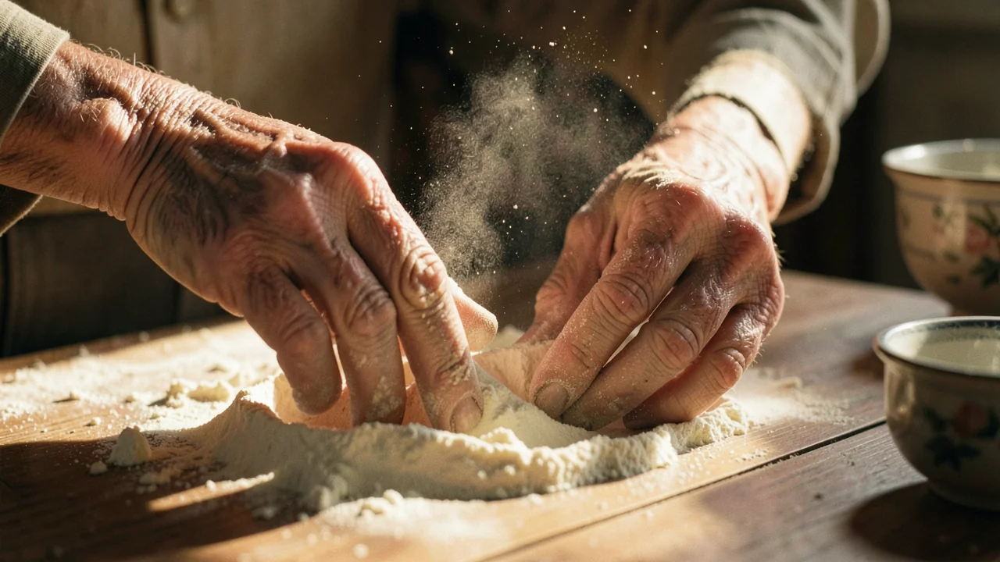
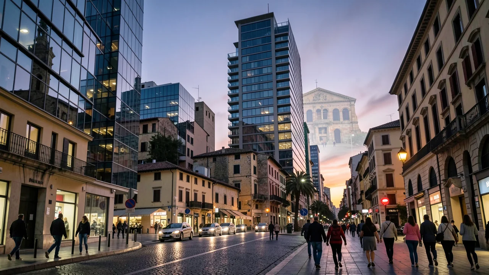

Die italienische Diaspora und der Geist von „La Dolce Vita“
KI-generiert: Texte, Bilder und andere Medien auf dieser Seite wurden mit künstlicher Intelligenz erstellt und können Fehler enthalten.
Hinter jeder großartigen Pasta-Soße, die in einer Vorortküche zubereitet wird, verbirgt sich eine tiefe, unerschütterliche Sehnsucht nach einem Zuhause, das vielleicht gar nicht mehr existiert.

- The Italian diaspora uses food and tradition to bridge the gap between past and present.
- Nostalgia acts as a tool for maintaining identity in a changing world.
- The concept of 'returning' is often more about psychological comfort than physical travel.
Ein älterer Mann in New Jersey faltet vorsichtig ein Stück Papier, auf dem ein Rezept für Ragù steht. Seine Hände zittern leicht, was die Aufgabe etwas erschwert. Er bereitet nicht einfach nur das Abendessen zu; er vollzieht ein Ritual der Auferstehung. Für Millionen von Menschen in der italienischen Diaspora ist Essen nicht nur Nahrung – es ist eine Möglichkeit, die Geister eines Dorfes heraufzubeschwören, das sie vielleicht vor fünfzig Jahren verlassen haben, oder vielleicht eines Dorfes, das ihre Großeltern verlassen haben, und das sie nur durch verblichene Schwarz-Weiß-Filme kennen.

Der Mythos von der ewigen Wiederkehr
In der Philosophie gibt es das Konzept der „ewigen Wiederkehr“, die Vorstellung, dass alles, was geschieht, immer und immer wieder geschehen wird, für alle Ewigkeit. Während Nietzsche es nutzte, um eine Art existenzielle Krise auszulösen, verwenden die italienischen Auswanderer es, um eine Verbindung zu einer verlorenen Vergangenheit aufrechtzuerhalten. Es ist der Glaube, dass man, wenn man die exakte Menge an Knoblauch verwendet, die richtige Mehlsorte einsetzt und die richtige Oper auflegt, kurzzeitig in einer Version Italiens leben kann, die ewig „golden“ ist.
Es ist ein schöner Gedanke, aber auch ein wenig Fantasie. Wir spielen gerne so, als wäre das „alte Heimatland“ ein statisches, sonnendurchflutetes Paradies mit entspannten Mittagessen und keinerlei Bürokratie. In Wirklichkeit ist das Italien, nach dem man sich sehnt, oft ein sorgfältig kuratiertes Museumsstück, eine Version eines Landes, das stark verändert wurde. nostalgische Erinnerungen und KinoWir sehnen uns nicht nur nach einem bestimmten Ort, sondern auch nach einer Zeit, in der es wahrscheinlich viel mehr Cholera und viel weniger WLAN gab, als wir zugeben würden.
Die Architektur der Sehnsucht
Wie funktioniert diese Sehnsucht eigentlich? Sie ist nicht nur eine vage Traurigkeit, sondern ein aktiver, struktureller Bestandteil, der die Lebensweise dieser Gemeinschaften prägt. Sie zeigt sich in der Art und Weise, wie Stadtteile organisiert sind, wie Feiertage begangen werden und sogar in der Art und Weise, wie Menschen trauern. Sie ist eine Möglichkeit, die Kluft zwischen dem „Hier“ (meist eine laute, moderne Metropole) und dem „Dort“ (ein ruhiger, von Vorfahren bewohnter Hügel) zu überbrücken.
Für die Menschen in der Diaspora dienen kulturelle Rituale als eine Art psychologische Brücke zwischen einem verlorenen Heimatland und einer neuen, ungewissen Realität.
Dieses „Sehnen“ wirkt wie ein kultureller Kitt, schafft aber auch einen eigentümlichen Zustand des „Dazwischenseins“. Man ist nicht vollständig Teil des neuen Landes, weil man zu sehr in die Vergangenheit blickt, und man ist auch nicht Teil des alten Landes, weil man eben nicht dort ist. Es ist ein bisschen so, als wäre man in einer ständigen Wartehalle eines Flughafens gefangen – es ist bequem, aber man ist nie wirklich zu Hause.

Warum das tatsächlich wichtig ist (und nicht nur wegen der Carbonara)
Vielleicht denken Sie sich: „Ich mag Oliven sowieso nicht, warum sollte mich italienische Nostalgie interessieren?“ Weil es hier nicht nur um Italien geht. Es geht darum, wie ... kulturelle Identität in einer globalisierten Welt erhalten bleibt. Jede Migrantengruppe – ob sie vor Konflikten flieht oder einfach nur ein besseres Einkommen sucht – nutzt dieselben Mechanismen von „Nahrung, Fantasie und Geistern“, um ihre Identität davor zu bewahren, sich in der lokalen Kultur aufzulösen.
Wenn wir über ... sprechen die Mechanismen der DiasporaWir sprechen darüber, wie Menschen ihr Gedächtnis nutzen, um die Erfahrung von Vertreibung zu überwinden. Es ist eine Überlebensstrategie, die es den Menschen ermöglicht, ihr „Zuhause“ in sich zu tragen, selbst wenn das physische Zuhause nicht mehr existiert oder sich grundlegend verändert hat.
Die bittersüße Realität
Ist also der Traum von „La Dolce Vita“ eine Lüge? Nicht ganz. Es ist eine nützliche Fiktion. Sie vermittelt Sinn, schafft Gemeinschaft und bietet eine sehr angenehme Möglichkeit, einen Sonntagnachmittag zu verbringen. Aber wir müssen erkennen, dass die „ewige Wiederkehr“ ein Versuch ist, die Zeit aufzuhalten. Das echte Italien entwickelt sich weiter, verändert sich und stellt sich seinen eigenen, modernen Herausforderungen, genau wie alle anderen.
Wir können das Ritual des Rezepts und die Wärme der Gemeinschaft genießen, ohne so zu tun, als wäre die Vergangenheit ein unverändertes Meisterwerk. Schließlich würden wir uns nie die Mühe machen, etwas Neues zu erschaffen, wenn die Vergangenheit wirklich perfekt wäre.
Was ist das „Phantom-Zuhause“ in Ihrer eigenen Familiengeschichte? Ist es ein Ort, ein Geschmack oder einfach nur ein Gefühl, das Sie nicht ganz benennen können?
Nimm an dem begleitenden Quiz zu dieser Geschichte teil und finde heraus, wie gut du abschneidest.
Machen Sie das Quiz.Das könnte Sie auch interessieren.